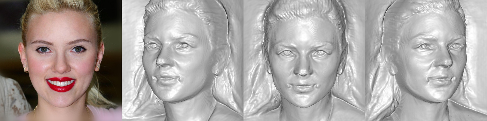
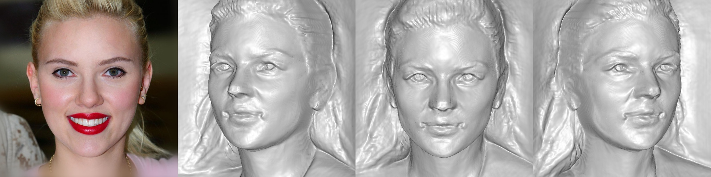

Semantic Editing
For each row, we show the input image on the left, followed by edited multi-view reconstructions. You may hover over and slide the mouse to check the corresponding geometry. We also show the reconstruction video on the right.
We compare the results of our method against the pretrained method and the full fine-tuning method.
A closer check at the personalization without LoRA (Full F.T.) shows that floater artifacts may be introduced in the final video results.
|
|||||||||||||||||||||||||||||||||||||||||||||||||||||||||||||||||||||||||||||||||||||||||||||||||||||||||||||||||||||||||||||||||||||||||||


 
